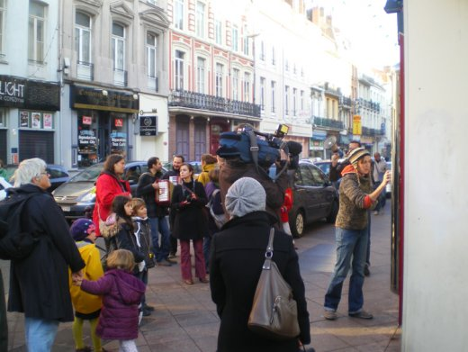
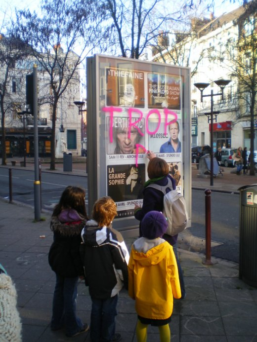
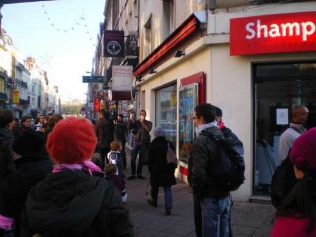

| |
Site dédié à la publication d'informations communiquées par le Collectif des déboulonneurs. En aucun cas ce site n'appelle à des actions illégales. | |
 |
||
|
Accueil du site > Lille > 43e Action du Collectif des Déboulonneurs de Lille - 20 Novembre (...)

Compte rendu de l’actionHeure de l’action : 11h - 12h30 Lieu : rue Gambetta, depuis la place de la République jusqu’au marché de Wazemmes Nombre de panneaux touchés : 5 sucettes CBS, un 2m² mural JCD. La 6ème et dernière sucette prévue était déjà fracturée. Nous avons décidé de ne pas la barbouiller pour ne pas que notre action soit assimilé à de la casse. Nous avons fait constater aux policiers municipaux (qui étaient là pour le marché) qu’elle était déjà cassée, que nous n’avions rien fait. Slogans : STOP PUB, Pub : ne pas avaler, Trop de Pub, Pub = Pollution mentale, Y’en a marre de la pub, Besoin inutile... Nombre d’activistes : 30, dont de nombreux musiciens Nombre approximatif de passants-spectateurs : un jour de marché à Wazemmes, c’est plusieurs centaines de passants qui ont vu l’action, et encore plus qui verront le fruit de notre action. Nombre de journalistes présents : France3, Nord Eclair, 1 stagiaire de La Voix du Nord, 2 étudiantes en communication et médias. Attitude de la police : ce n’est qu’arrivés au dernier panneau (le panneau cassé que nous n’avons pas touché) que nous avons rencontré des agents de stationnement. Nous leur avons expliqué notre action, les 6 déjà barbouillés, celui-ci que nous ne barbouillerons pas. Ils ont prévenu la police municipale. Echange très cordial sur le thème, c’est bien ce que vous faites (mais on a pas le droit de le dire) et vous avez eu raison de ne pas barbouiller celui déjà cassé. C’est tout. Retombées presse :

Communiqué de presseAccompagnés de nombreux musiciens (batukada et accordéonistes), les déboulonneurs sont de nouveau entrés en désobéissance civile ce dimanche matin. Une trentaine de citoyens sont venus soutenir les 4 déboulonneurs qui ont barbouillé les panneaux de la rue Gambetta, de la place de la République jusqu’au Marché de Wazemmes. Six panneaux ont été barbouillés à la bombe avec les messages « Stop pub », « Trop de pub », « Y’en a marre de la pub »... Cette action de désobéissance civile non-violente a reçu un bon accueil de la part des habitants du quartier de Wazemmes venus faire leur marché. Beaucoup ont reconnu être saturés par la publicité et nous ont remerciés pour notre action. Lors de cette action, les barbouilleurs, agissant à visage découvert, n’ont pas été inquiétés par les forces de l’ordre. Inlassablement et jusqu’à gain de cause, c’est-à-dire jusqu’à la réduction significative de la publicité dans l’espace public, les déboulonneurs continueront d’agir. Communiqué de Presse

|
|
Site utilisant SPIP - Hébergement Ouvaton
|